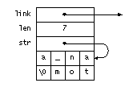
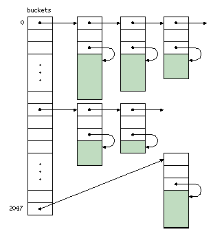

This page is an HTML rendition of Chapter 3 of C Interfaces and Implementations and thus only approximates the appearance of the printed chapter. This page uses cascading style sheets (CSS) and thus must be viewed using a CSS-aware browser, such as Netscape Navigator 4 or Microsoft Internet Explorer 3 or better. The Acrobat PDF rendition of this chapter is more faithful to the printed version.
| 3 |
| Atoms |
An atom is a pointer to a unique, immutable sequence of zero or more arbitrary bytes. Most atoms are pointers to null-terminated strings, but a pointer to any sequence of bytes can be an atom. There is only a single occurrence of any atom, which is why it's called an atom. Two atoms are identical if they point to the same location. Comparing two byte sequences for equality by simply comparing pointers is one of the advantages of atoms. Another advantage is that using atoms saves space because there's only one occurrence of each sequence.
Atoms are often used as keys in data structures that are indexed by sequences of arbitrary bytes instead of by integers. The tables and sets described in Chapters 8 and 9 are examples.
The Atom interface is simple:
<atom.h>= #ifndef ATOM_INCLUDED #define ATOM_INCLUDED extern int Atom_length(const char *str); extern const char *Atom_new (const char *str, int len); extern const char *Atom_string(const char *str); extern const char *Atom_int (long n); #endif
Atom_new accepts a pointer to a sequence of bytes and the number of bytes in that sequence. It adds a copy of the sequence to the table of atoms, if necessary, and returns the atom, which is a pointer to the copy of the sequence in the atom table. Atom_new never returns the null pointer. Once an atom is created, it exists for the duration of the client's execution. An atom is always terminated with a null character, which Atom_new adds when necessary.
Atom_string is similar to Atom_new ; it caters to the common use of character strings as atoms. It accepts a null-terminated string, adds a copy of that string to the atom table, if necessary, and returns the atom. Atom_int returns the atom for the string representation of the long integer n—another common usage. Finally, Atom_length returns the length of its atom argument.
It is a checked runtime error to pass a null pointer to any function in this interface, to pass a negative len to Atom_new, or to pass a pointer that is not an atom to Atom_length. It is an unchecked runtime error to modify the bytes pointed to by an atom. Atom_length can take time to execute proportional to the number of atoms. Atom_new, Atom_string, and Atom_int can each raise the exception Mem_Failed.
The implementation of Atom maintains the atom table. Atom_new, Atom_string, and Atom_int search the atom table and possibly add new elements to it, and Atom_length just searches it.
<atom.c>= <includes 34> <macros 37> <data 36> <functions 35>
<includes 34>= #include "atom.h"
Atom_string and Atom_int can be implemented without knowing the representation details of the atom table. Atom_string, for example, just calls Atom_new:
<functions 35>=
const char *Atom_string(const char *str) {
assert(str);
return Atom_new(str, strlen(str));
}
<includes 34>+= #include <string.h> #include "assert.h"
Atom_int first converts its argument to a string, then calls Atom_new:
<functions 35>+=
const char *Atom_int(long n) {
char str[43];
char *s = str + sizeof str;
unsigned long m;
if (n == LONG_MIN)
m = LONG_MAX + 1UL;
else if (n < 0)
m = -n;
else
m = n;
do
*--s = m%10 + '0';
while ((m /= 10) > 0);
if (n < 0)
*--s = '-';
return Atom_new(s, (str + sizeof str) - s);
}
<includes 34>+= #include <limits.h>
Atom_int must cope with the asymmetrical range of two's-complement numbers and with the ambiguities of C's division and modulus operators. Unsigned division and modulus are well defined, so Atom_int can avoid the ambiguities of the signed operators by using unsigned arithmetic.
The absolute value of the most negative signed long integer cannot be represented, because there is one more negative number than positive number in two's-complement systems. Atom_new thus starts by testing for this single anomaly before assigning the absolute value of its argument to the unsigned long integer m. The value of LONG_MAX resides in the standard header limits.h.
The loop forms the decimal string representation of m from right to left; it computes the rightmost digit, divides m by 10, and continues until m is zero. As each digit is computed, it's stored at --s, which marches s backward in str . If n is negative, a minus sign is stored at the beginning of the string.
When the conversion is done, s points to the desired string, and this string has &str[43]-s characters. str has 43 characters, which is enough to hold the decimal representation of any integer on any conceivable machine. Suppose, for example, that longs are 128 bits. The string representation of any 128-bit signed integer in octal—base 8—fits in 128/3 + 1 = 43 characters. The decimal representation can take no more digits than the octal representation, so 43 characters are enough.
The 43 in the definition of str is an example of a "magic number," and it's usually better style to define a symbolic name for such values to ensure that the same value is used everywhere. Here, however, the value appears only once, and sizeof is used whenever the value is used. Defining a symbolic name might make the code easier to read, but it will also make the code longer and clutter the name space. In this book, a symbolic name is defined only when the value appears more than once, or when it is part of an interface. The length of the hash table buckets below—2,048—is another example of this convention.
A hash table is the obvious data structure for the atom table. The hash table is an array of pointers to lists of entries, each of which holds one atom:
<data 36>=
static struct atom {
struct atom *link;
int len;
char *str;
} *buckets[2048];
The linked list emanating from buckets[i] holds those atoms that hash to i. An entry's link field points to the next entry on the list, the len field holds the length of the sequence, and the str fields points to the sequence itself. For example, on a little endian computer with 32-bit words and 8-bit characters, Atom_string("an atom") allocates the struct atom shown in Figure 3.1, where the underscore character (_) denotes a space. Each entry is just large enough to hold its sequence. Figure 3.2 shows the overall structure of the hash table.
|  |
| Figure 3.1 Little endian layout of a struct atom for " an atom" |
|  |
| Figure 3.2 Hash table structure |
Atom_new computes a hash number for the sequence given by str[0..len-1] (or the empty sequence, if len is zero), reduces this hash number modulo the number of elements in buckets, and searches the list pointed to by that element of buckets. If it finds that str[0..len-1] is already in the table, it simply returns the atom:
<functions 35>+=
const char *Atom_new(const char *str, int len) {
unsigned long h;
int i;
struct atom *p;
assert(str);
assert(len >= 0);
<h = hash str[0..len-1] 39>
h &= NELEMS(buckets)-1;
for (p = buckets[h]; p; p = p->link)
if (len == p->len) {
for (i = 0; i < len && p->str[i] == str[i]; )
i++;
if (i == len)
return p->str;
}
<allocate a new entry 39>
return p->str;
}
<macros 37>+= #define NELEMS(x) ((sizeof (x))/(sizeof ((x)[0])))
The definition of NELEMS illustrates a common C idiom: The number of elements in an array is the size of the array divided by the size of each element. sizeof is a compile-time operator, so this computation applies only to arrays whose size is known at compile time. As this definition illustrates, macro parameters are italicized to highlight where they are used in the macro body.
If str[0..len-1] isn't in the table, Atom_new adds it by allocating a struct atom and enough additional space to hold the sequence, copying str[0..len-1] into the additional space and linking the new entry onto the beginning of the list emanating from em CLASS="Code">buckets[h]. The entry could be appended to the end of the list, but adding it at the front of the list is simpler.
<allocate a new entry 39>= p = ALLOC(sizeof (*p) + len + 1); p->len = len; p->str = (char *)(p + 1); if (len > 0) memcpy(p->str, str, len); p->str[len] = '\0'; p->link = buckets[h]; buckets[h] = p;
<includes 34>+= #include "mem.h"
ALLOC is Mem's primary allocation function, and it mimics the standard library function malloc: its argument is the number of bytes needed. Atom_new cannot use Mem's NEW, which is illustrated in Stack_push, because the number of bytes depends on len; NEW applies only when the number of bytes is known at compile time. The call to ALLOC above allocates the space for both the atom structure and for the sequence, and the sequence is stored in the immediately succeeding bytes.
Hashing the sequence passed to Atom_new involves computing an unsigned number to represent the sequence. Ideally, these hash numbers should be distributed uniformly over the range zero to NELEMS(buckets)-1 for N sequences. If they are so distributed, each list in buckets will have N/NELEMS(buckets) elements, and the average time to search for a sequence will be N/2·NELEMS(buckets). If N is less than, say, 2·NELEMS(buckets), the search time is essentially a constant.
Hashing is a well-studied subject, and there are many good hash functions. Atom_new uses a simple table-lookup algorithm:
<h = hash str[0..len-1] 39>= for (h = 0, i = 0; i < len; i++) h = (h<<1) + scatter[(unsigned char)str[i]];
scatter is a 256-entry array that maps bytes to random numbers, which were generated by calling the standard library function rand. Experience shows that this simple approach helps to more uniformly distribute the hash values. Casting str[i] to an unsigned character avoids C's ambiguity about "plain" characters: they can be signed or unsigned. Without the cast, values of str[i] that exceed 127 would yield negative indices on machines that use signed characters.
<data 36>+=
static unsigned long scatter[] = {
2078917053, 143302914, 1027100827, 1953210302, 755253631, 2002600785,
1405390230, 45248011, 1099951567, 433832350, 2018585307, 438263339,
813528929, 1703199216, 618906479, 573714703, 766270699, 275680090,
1510320440, 1583583926, 1723401032, 1965443329, 1098183682, 1636505764,
980071615, 1011597961, 643279273, 1315461275, 157584038, 1069844923,
471560540, 89017443, 1213147837, 1498661368, 2042227746, 1968401469,
1353778505, 1300134328, 2013649480, 306246424, 1733966678, 1884751139,
744509763, 400011959, 1440466707, 1363416242, 973726663, 59253759,
1639096332, 336563455, 1642837685, 1215013716, 154523136, 593537720,
704035832, 1134594751, 1605135681, 1347315106, 302572379, 1762719719,
269676381, 774132919, 1851737163, 1482824219, 125310639, 1746481261,
1303742040, 1479089144, 899131941, 1169907872, 1785335569, 485614972,
907175364, 382361684, 885626931, 200158423, 1745777927, 1859353594,
259412182, 1237390611, 48433401, 1902249868, 304920680, 202956538,
348303940, 1008956512, 1337551289, 1953439621, 208787970, 1640123668,
1568675693, 478464352, 266772940, 1272929208, 1961288571, 392083579,
871926821, 1117546963, 1871172724, 1771058762, 139971187, 1509024645,
109190086, 1047146551, 1891386329, 994817018, 1247304975, 1489680608,
706686964, 1506717157, 579587572, 755120366, 1261483377, 884508252,
958076904, 1609787317, 1893464764, 148144545, 1415743291, 2102252735,
1788268214, 836935336, 433233439, 2055041154, 2109864544, 247038362,
299641085, 834307717, 1364585325, 23330161, 457882831, 1504556512,
1532354806, 567072918, 404219416, 1276257488, 1561889936, 1651524391,
618454448, 121093252, 1010757900, 1198042020, 876213618, 124757630,
2082550272, 1834290522, 1734544947, 1828531389, 1982435068, 1002804590,
1783300476, 1623219634, 1839739926, 69050267, 1530777140, 1802120822,
316088629, 1830418225, 488944891, 1680673954, 1853748387, 946827723,
1037746818, 1238619545, 1513900641, 1441966234, 367393385, 928306929,
946006977, 985847834, 1049400181, 1956764878, 36406206, 1925613800,
2081522508, 2118956479, 1612420674, 1668583807, 1800004220, 1447372094,
523904750, 1435821048, 923108080, 216161028, 1504871315, 306401572,
2018281851, 1820959944, 2136819798, 359743094, 1354150250, 1843084537,
1306570817, 244413420, 934220434, 672987810, 1686379655, 1301613820,
1601294739, 484902984, 139978006, 503211273, 294184214, 176384212,
281341425, 228223074, 147857043, 1893762099, 1896806882, 1947861263,
1193650546, 273227984, 1236198663, 2116758626, 489389012, 593586330,
275676551, 360187215, 267062626, 265012701, 719930310, 1621212876,
2108097238, 2026501127, 1865626297, 894834024, 552005290, 1404522304,
48964196, 5816381, 1889425288, 188942202, 509027654, 36125855,
365326415, 790369079, 264348929, 513183458, 536647531, 13672163,
313561074, 1730298077, 286900147, 1549759737, 1699573055, 776289160,
2143346068, 1975249606, 1136476375, 262925046, 92778659, 1856406685,
1884137923, 53392249, 1735424165, 1602280572
};
Atom_length can't hash its argument because it doesn't know its length. But the argument must be an atom, so Atom_length can simply scream through the lists in buckets comparing pointers. If it finds the atom, it returns the atom's length:
<functions 35>+=
int Atom_length(const char *str) {
struct atom *p;
int i;
assert(str);
for (i = 0; i < NELEMS(buckets); i++)
for (p = buckets[i]; p; p = p->link)
if (p->str == str)
return p->len;
assert(0);
return 0;
}
assert(0) implements the checked runtime error that Atom_length must be called only with an atom, not just a pointer to a string. assert(0) is also used to signal conditions that are not supposed to occur—so-called "can't-happen" conditions.
Atoms have long been used in LISP, which is the source of their name, and in string-manipulation languages, such as SNOBOL4, which implemented strings almost exactly as described in this chapter (Griswold 1972). The C compiler lcc (Fraser and Hanson 1995) has a module that is similar to Atom and is the predecessor to Atom's implementation. lcc stores the strings for all identifiers and constants that appear in the source program in a single table, and never deallocates them. Doing so never consumes too much storage because the number of distinct strings in C programs is remarkably small regardless of the size of the source programs.
Sedgewick (1990) and Knuth (1973b) describe hashing in detail and give guidelines for writing good hash functions. The hash function used in Atom (and in lcc) was suggested by Hans Boehm.
h &= NELEMS(buckets)-1;
to
h %= NELEMS(buckets);
and repeat the measurements. Does using a prime help? How much does your conclusion depend on your specific machine?
struct atom {
struct atom *link;
int len;
char str[1];
};
A struct atom for a string of len bytes is allocated by ALLOC(sizeof(*p)+len), which allocates space for the link and len fields, and a str field long enough to hold len+1 bytes. This approach avoids the time and space required for the extra indirection induced by declaring str to be a pointer. Unfortunately, this "trick" violates the C standard, because clients access the bytes beyond str[0], and the effect of these accesses is undefined. Implement this approach and measure the cost of the indirection. Are the savings worth violating the standard?
extern void Atom_init(int hint);
where hint estimates the number of atoms the client expects to create. What checked runtime errors would you add to constrain when Atom_init could be called?
extern void Atom_free (char *str); extern void Atom_reset(void);
could deallocate the atom given by str and deallocate all atoms, respectively. Implement these functions. Don't forget to specify and implement appropriate checked runtime errors.
extern void Atom_vload(const char *str, ...); extern void Atom_aload(const char *strs[]);
Atom_vload installs the strings given in the variable length argument list up to a null pointer, and Atom_aload does the same for a null-terminated array of pointers to strings.
extern const char *Atom_add(const char *str, int len);
which works like Atom_new but doesn't make a copy of the sequence. If you provide Atom_add and Atom_free (and Atom_reset from Exercise 3.8, what checked runtime errors must be specified and implemented?